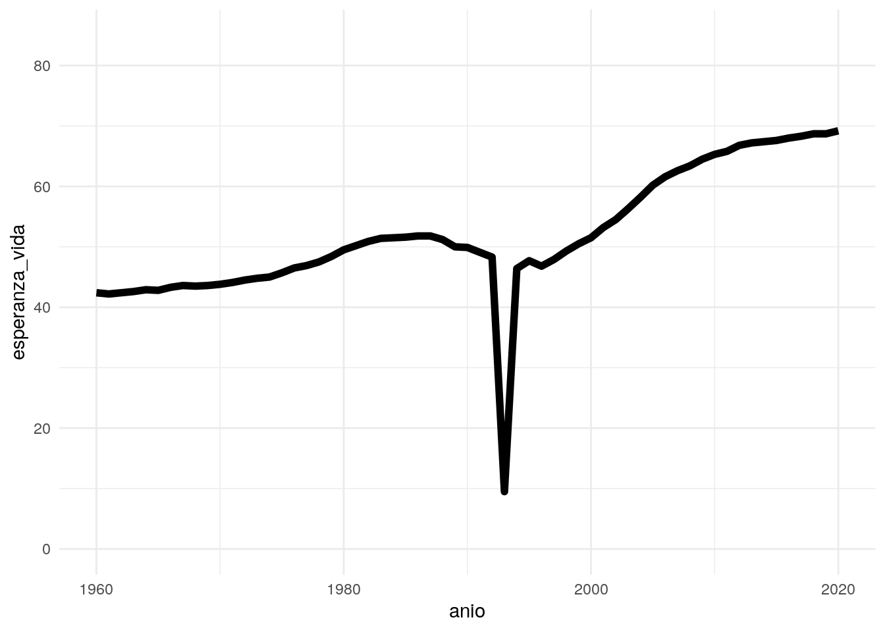

código fuente
library(readr)
library(dplyr)
library(ggplot2)
desarrollo <- read_csv(here::here("datos/datos-desarrollo.csv"))Lo que vamos a hacer es ver cómo importar datos que están en otro lugar de mi proyecto y cómo parametrizar reportes.
Lo primero que haremos será importar los datos con los que vamos a trabajar.
library(readr)
library(dplyr)
library(ggplot2)
desarrollo <- read_csv(here::here("datos/datos-desarrollo.csv"))La siguiente tabla muestra los datos sobre esperanza de vida según continente para el año 2020:
desarrollo |>
filter(anio == 2020) |>
group_by(continente) |>
summarise(media = mean(esperanza_vida, na.rm = TRUE), min = min(esperanza_vida, na.rm = TRUE), max = max(esperanza_vida, na.rm = TRUE)) |>
knitr::kable()| continente | media | min | max |
|---|---|---|---|
| África | 66.03529 | 52.6 | 78.1 |
| Américas | 75.90000 | 64.4 | 82.5 |
| Asia | 74.57949 | 64.0 | 85.1 |
| Europa | 79.70000 | 73.6 | 84.4 |
| Oceanía | 69.35000 | 59.4 | 83.2 |
En el caso de Ruanda, la esperanza de vida ha tenido la evolución que se muestra en el siguiente gráfico:
desarrollo |>
filter(pais == params$pais) |>
ggplot(aes(x = anio, y = esperanza_vida)) +
geom_line(size = 2) +
scale_y_continuous(limits = c(0, 85)) +
theme_minimal()